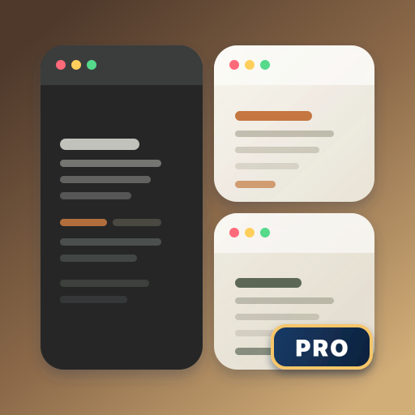
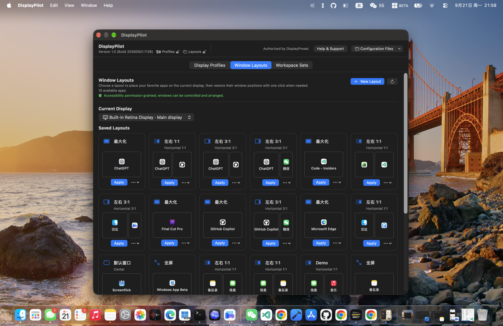
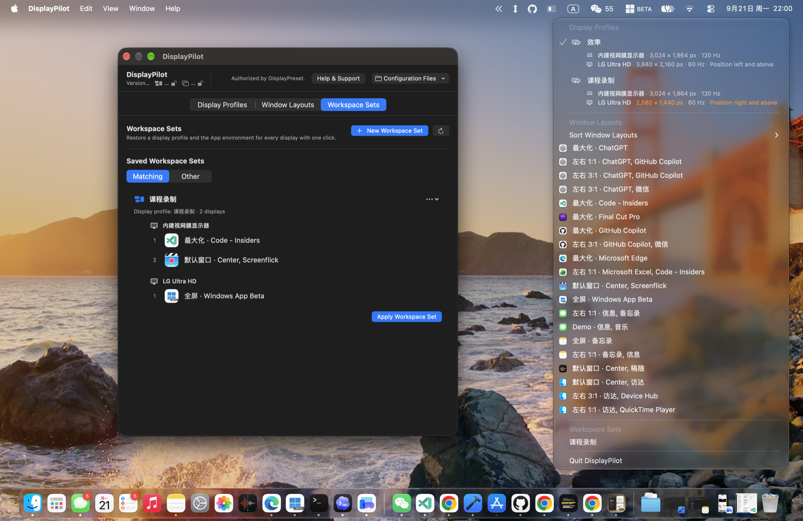

Smart Window Snapping
Stop dragging and resizing windows by hand. Capture coordinates and screen zones for all open apps and restore them instantly.

DisplayPilotNo more messy windows every time you connect or unplug displays. DisplayPilot remembers your ideal window layout and app setups across all monitors, returning you instantly to deep work.
DisplayPilot requires Accessibility permissions for window positioning and reads authorization from DisplayPreset on the same Mac.
Stop dragging and resizing windows by hand. Capture coordinates and screen zones for all open apps and restore them instantly.
Group dedicated apps and layouts for coding, writing, design, or meetings, transitioning seamlessly between workflow contexts.
Right-click the menu bar icon anytime to switch display setups, layouts, or workspaces without interrupting your focus.
Operates entirely on your device with no accounts, telemetry, or remote servers, verified locally via DisplayPreset.



DisplayPreset and DisplayPilot are built to complement each other cleanly while we strictly adhere to Apple's App Store and macOS security guidelines.
DisplayPreset is available on the Mac App Store, sandboxed, and handles hardware display arrangement profiles and StoreKit purchases securely through Apple. DisplayPilot operates with macOS Accessibility permissions to manage third-party app windows and launch application workspaces. By sharing entitlements locally through Apple's App Group container, you get advanced desktop window orchestration without extra fees.